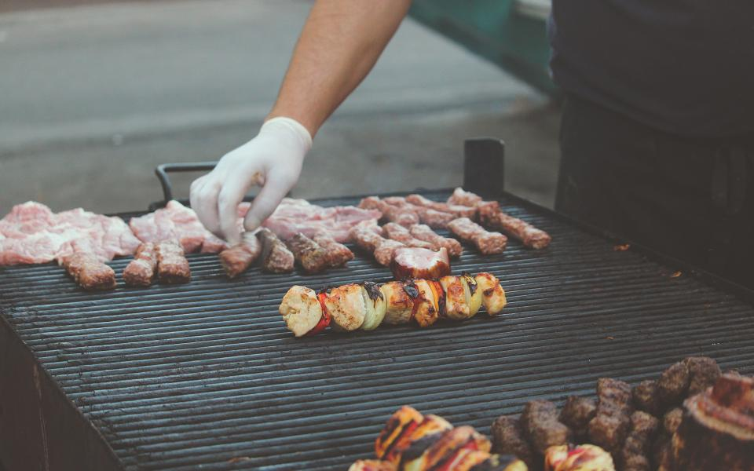

柏市にある「PORTWAY COFFEE」さんにて、一息カフェタイム☕✨一見、住宅のようですが、写真の通り1階はオシャレカフェ✨素敵な内装や家具に囲まれいただくコーヒーは格別。オリジナルのブレンドコーヒーはスッキリしていて飲みやすく、美味しかったです。
場所は郵便局通り沿い。柏駅からだと歩いて10分くらい。通り沿いですが、周辺は静かな住宅地です。
近くに行かれることがあれば、是非😉
CONCEPT
商店街と住宅街のあいだ、静かな通りに面したこの建物は、遠目には普通の住宅そのもの。けれど扉を開けると、シンプルながらどこかシックにまとめられた内装と、コーヒーの香りが迎えてくれます。
柏駅から歩いて10〜15分。少し歩く距離も、ここでは一杯のコーヒーを待つ時間の続きのようなものです。
コンセプトを読むFRENCH PRESS
PORTWAY COFFEEでは、フレンチプレスで一杯ずつ抽出しています。使うのは、時間を計る砂時計と、抽出を仕上げるレバー式のプレス。効率を優先すれば省ける手間ですが、この店ではあえてその時間を大切にしています。
砂が落ちきるまでの数分間、席に座って待つこと自体も、この店で過ごす時間のひとつです。
メニューで詳しく見るABOUT THE SPACE
4人テーブルが2卓、2人テーブルが3卓、カウンターが2席。入口にはテラス席もご用意しています。決して広い店ではありませんが、その分、目の届く距離感と落ち着いた空気が生まれます。
駐車場もございますが、台数に限りがございます。お車でお越しの際はあらかじめご了承ください。Wi-Fiをご利用いただけるほか、入口には車椅子でもご入店いただけるスロープを設けています。
設備・アクセスの詳細VOICE
柏市にある「PORTWAY COFFEE」さんにて、一息カフェタイム☕✨一見、住宅のようですが、写真の通り1階はオシャレカフェ✨素敵な内装や家具に囲まれいただくコーヒーは格別。オリジナルのブレンドコーヒーはスッキリしていて飲みやすく、美味しかったです。
場所は郵便局通り沿い。柏駅からだと歩いて10分くらい。通り沿いですが、周辺は静かな住宅地です。
近くに行かれることがあれば、是非😉
最近お気に入りのカフェです！コーヒーがとても美味しいです。外装もインテリアもセンスがあってオシャレで落ち着ける空間です。チェーン店はガヤガヤしてるのでありがたいです！駅から少しだけ歩きますがそれでも通いたいと思える素敵カフェです♪ ケーキも色々ありました。
小さなカフェですが、入口のスロープなど車椅子利用者の入店に配慮した作りになっていて、嬉しかったです。店内の内装も、シンプルだけどシックで、素敵でした。オリジナルブレンドのコーヒーを妻と二人でいただきましたが、とても美味しかったです。ごちそうさまでした。😊
PHOTO SAMPLE(フリー素材によるイメージ写真)
